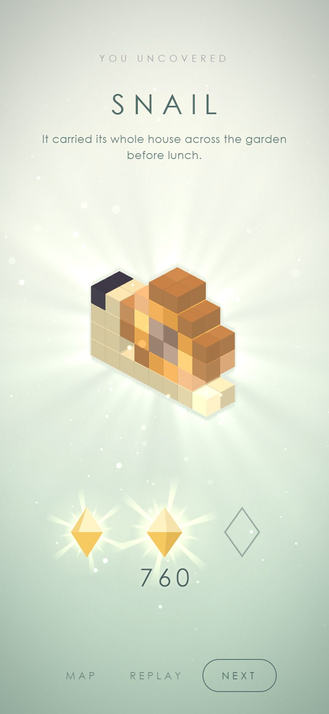
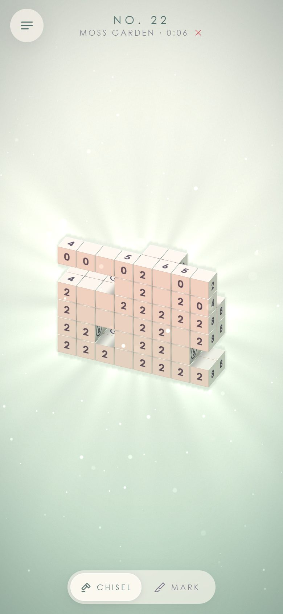
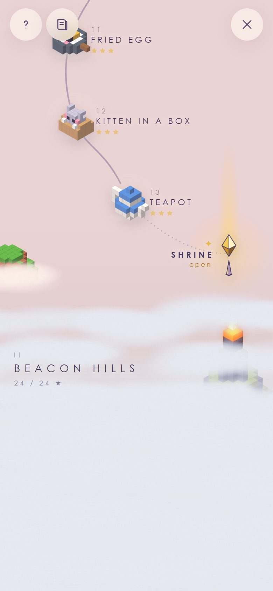

A lantern lights one row with a move.
a new flame each morning
a short ad,
then the map
In the store build an AppLovin MAX interstitial plays here. Closes after 5 s.

You've made 10 wrong moves.
next chisel in 29:41